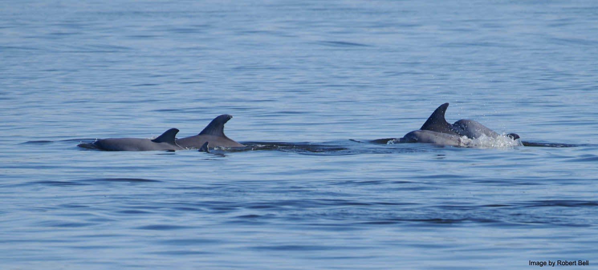
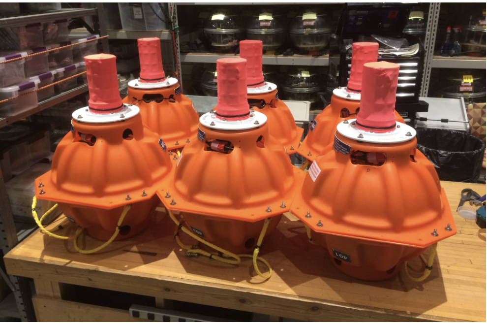
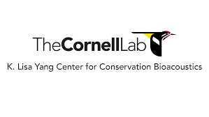
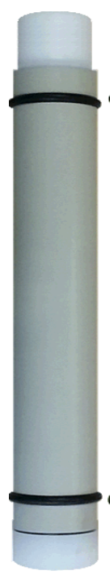

Marine Mammal Monitoring

Listening for Marine Mammals
A Passive Acoustic Monitoring (PAM) listening array will asses any long term changes in marine mammal behaviors associated with offshore wind development. In collaboration with Cornell University scientists, UMCES will deploy a hydrophone array including Rockhoppers ( detecting large whales and dolphins) and F-PODS (detecting echolocation clicks of dolphins and porpoises ). The arrangement of the array will assist analysts in assessing when and where marine mammals occur in the US Wind development area.
Listening devices
Rockhoppers
 
Rockhoppers continuously record sounds underwater, collecting data that will tell us about the presence of the critically endangered North Atlantic right whales, other baleen whales, and bottlenose and common dolphins. Deployment of this technology and related analysis represents a key partnership between UMCES and The Cornell Lab Center for Conservation Bioacoustics. To learn more about the Cornell Lab Center: https://www.birds.cornell.edu/ccb/
F-PODS

F-PODS log detailed information on echolocation clicks of dolphins and porpoises www.chelonia.co.uk. Unlike the Rockhoppers, these devices do not record the entire soundstream of the underwater environment but rather are specific to dolphins and porpoises.
Seasonality of Marine Mammals
Marine mammals can be detected offshore of Maryland year-round. However, specific species can only be found during specific times of the year. These seasonal patterns correlate with migration to and from favored feeding and breeding grounds. Marine mammals found offshore of Maryland include a variety of different dolphin species, the harbor porpoise, and baleen whales.

Sounds of Marine Mammals
Bottlenose Dolphins
Dolphins are a very social vocal species that use many different sounds for a variety of behaviors. Some of the sounds they make include echolocation clicks, buzzes, and whistles. Clicks and buzzes indicate foraging behavior, whereas whistles are used for social communication. Dolphins are known to emit individually-unique whistles called “signature whistles”. These whistles share the identity of an individual with other dolphins and are known to be stable for decades. Identifying signature whistles in audio recordings allows scientists an opportunity to track individuals temporally and spatially, a benefit when one is wondering if the same dolphins are returning to the same area year after year.
This video shows the spectrogram image and audio collected from an underwater recorder in the US Wind energy area. As the vertical bar scrolls across you can see and hear what dolphin clicks and whistles sound like. The repeated pattern of the same whistle is an example of a signature whistle.
Harbor Porpoise
Harbor porpoises are the smallest cetacean being monitored during this study and the most abundant in population size. Their foraging and social communication sounds consist of high frequency click trains.
North Atlantic right whale
North Atlantic right whales are the most endangered species in this study; their current status is critically-endangered with fewer than 340 individuals. The right whale’s presence can be determined in an audio recording by identifying upcall sounds at 200Hz.
Humpback Whale
Humpback whales create a variety of complex sounds. They are most-commonly known for their song patterns (only produced by male singers), however they can also emit social sounds (produced by both males and females). Humpback whales can sing up to 30 minutes at a time before they come up for air. The sequences of sound patterns created by singers are most-commonly used to identify the presence of humpback whales.